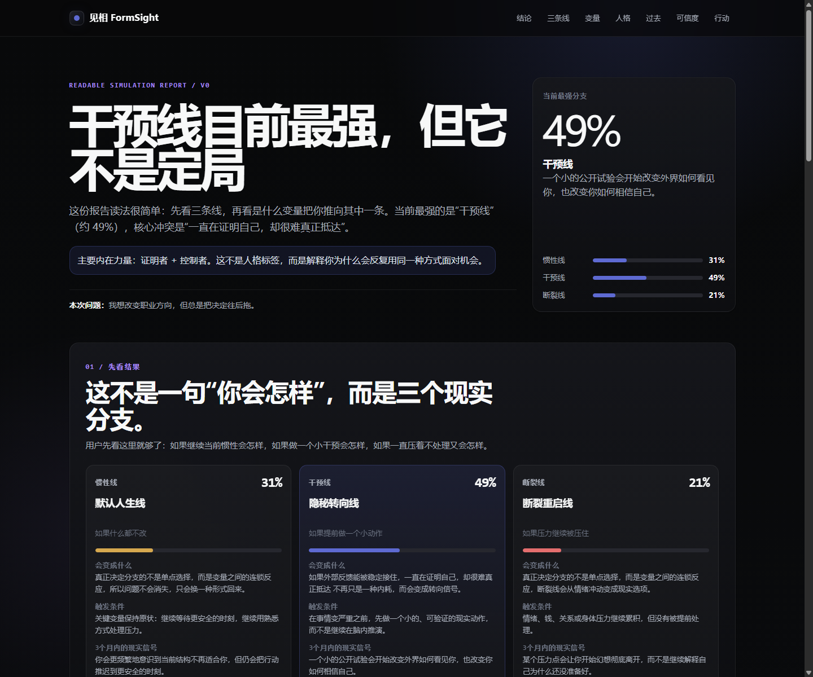
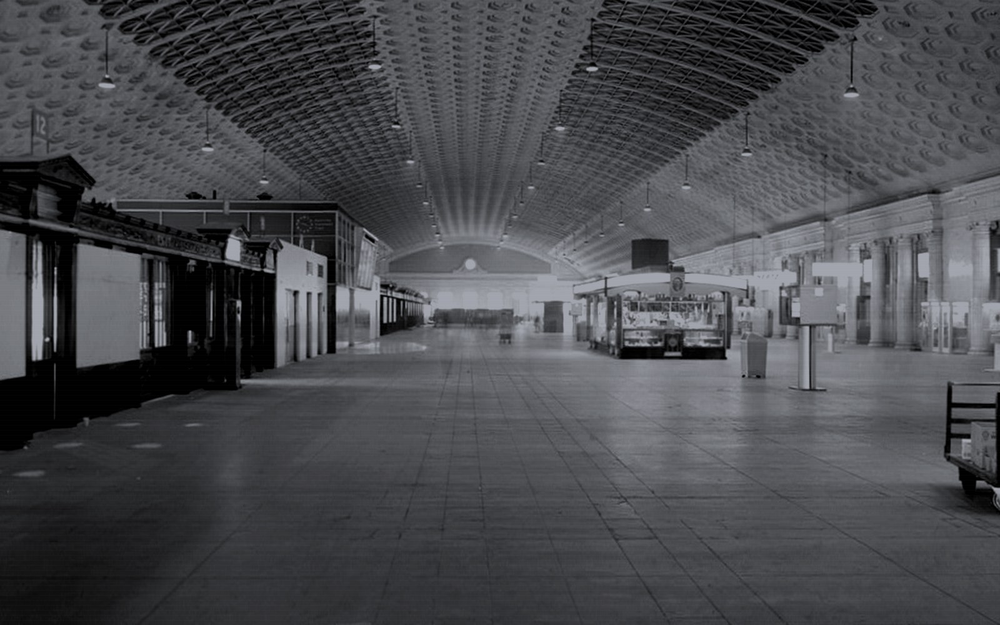

如果提前看见命运，
你会怎样度过这一生？
见相会读取你的经历、反复模式和现实处境，把它们整理成一组可以被观察的未来场景。 它不是预言未来，而是让你看见：过去正在怎样进入现实。
INPUT
过去反复发生过什么，现在卡在哪里，面对机会时的第一反应。
MODEL
把个人材料拆成变量、关系、行动倾向和现实约束。
OUTPUT
三条人生路径、未来场景、关键变量和下一步行动。
我们无时无刻不生活在相里
PRODUCT PHILOSOPHY / 见相
相，是你看世界的方式，也是你被世界反复塑造后的样子。 见相不是让你相信命运已经写好，而是让你在命运发生之前，先看见它的纹理。 如果你能看见自己如何走到这里，也许你就能更清醒地走向那里。
HOW IT WORKS
不是一句话问答，而是把人生材料变成可模拟结构。
见相不是输入生日得到答案。它需要真实、连续、具体的生活材料，再把材料拆成模式、变量和可能路径。
01 / MATERIAL
个人材料
日记、经历、关系、问题模板，或者你已经整理好的长文本。
02 / PATTERN
模式识别
看哪些处境反复出现，哪些反应总在关键时刻启动。
03 / VARIABLES
关键变量
把行动、关系、资源、恐惧和机会拆成可观察变量。
04 / BRANCHES
未来分支
模拟几条不同选择下可能展开的人生路径和具体场景。
05 / REPORT
报告输出
给出路径、变量、风险、转折点和下一步行动建议。
FOCUS DIMENSION
可以选择一个重点维度，但模型不会把人生切成孤岛。
你可以让见相重点模拟事业、感情、家庭、财富或身心状态。重点不是“只看这一项”，而是观察它如何牵动其他维度：一次职业选择，可能同时改变关系、现金流、家庭位置和身体能量。
COUPLING GRAPH / VARIABLE FIELD
当前聚焦：事业路径
人生场
事业路径
感情关系
财富资源
身心能量
家庭系统
能力资产
现金缓冲
压力阈值
责任位置
边界感
INPUT MATERIAL
真正的输入，不是一个问题，而是一组生活材料。
如果你平时有日记、备忘录、聊天记录、年度总结，也可以直接作为输入。问题模板只是帮助你整理材料的方式。
TEMPLATE / 16 PARTS
完整问题模板 v2
围绕当前处境、过去事件、早期经历、反复模式、家庭系统、关系、钱和资源、身体精力、城市圈层、世界观、想要与害怕的未来、关键转折点等维度整理。
01 / REPEATED
过去反复发生过什么
不是形容自己“内耗”，而是给出具体例子：什么时候、和谁、因为什么、你怎么反应。
02 / STUCK
现在卡在哪里
卡点可能来自钱、关系、家庭期待、身体精力、城市圈层，也可能来自行动感不足。
03 / FIRST REACTION
机会出现时的第一反应
你会前进、解释、讨好、控制、逃开，还是先等到一切都确定？这里往往藏着路径分叉。
DEMO REPORT
真正要展示的不是“AI 很酷”，而是它能生成什么。
这里暂时使用公开 demo 截图。后续应该替换成一份专门为官网准备的虚构案例报告，避免任何真实客户信息。

报告不是给你一个“答案”，而是把一个人的材料整理成几条能被讨论的路径： 哪条线更像过去的延续，哪条线需要新的行动，哪条线看起来诱人但代价很高。

PATH BRANCH三条人生路径PATHS
未来具体场景SCENES
关键变量解释VARIABLES
下一步行动建议NEXT
NOT FORTUNE TELLING
它不是预言未来，而是让未来变得可讨论。
见相输出的是模拟假设，不是权威结论。它的价值在于把隐约的感觉变成结构，把“我好像总是这样”变成可观察的路径。
NOT THIS
确定性预测
“你一定会怎样”“某年某月会发生什么”“输入生日看命运”——这些不是见相要做的事。
BUT THIS
条件性模拟
如果你继续复用旧模式，可能走向哪条线；如果某个变量被改变，另一条线会如何打开。
OUTPUT
路径、变量和行动
报告会呈现三条人生路径、未来具体场景、关键变量解释，以及更现实的下一步行动。
GET STARTED
你可以自己跑，也可以先整理材料。
目前见相处在开源和共创阶段。适合会用 Agent 的人自己跑，也适合普通用户先用模板整理自己的材料。
BOUNDARY
安全边界
见相生成的内容只适合作为自我观察、创意反思、写作和研究参考。它不构成心理诊断、医疗建议、法律建议、投资建议或职业决策依据，也不应该作为重大人生决定的唯一依据。
FORM SIGHT / OPEN EXPERIMENT
先看清一条线，再决定要不要改变它。
如果你已经有足够真实的日记、复盘、聊天记录或问题模板材料，就可以把它们整理成一次模拟输入。 见相不会替你决定人生，但它可以帮你看见：哪些旧模式正在把你推向同一种未来。
当前版本为开源实验项目展示页。正式域名、品牌视觉和提交入口可在后续上线时继续调整。